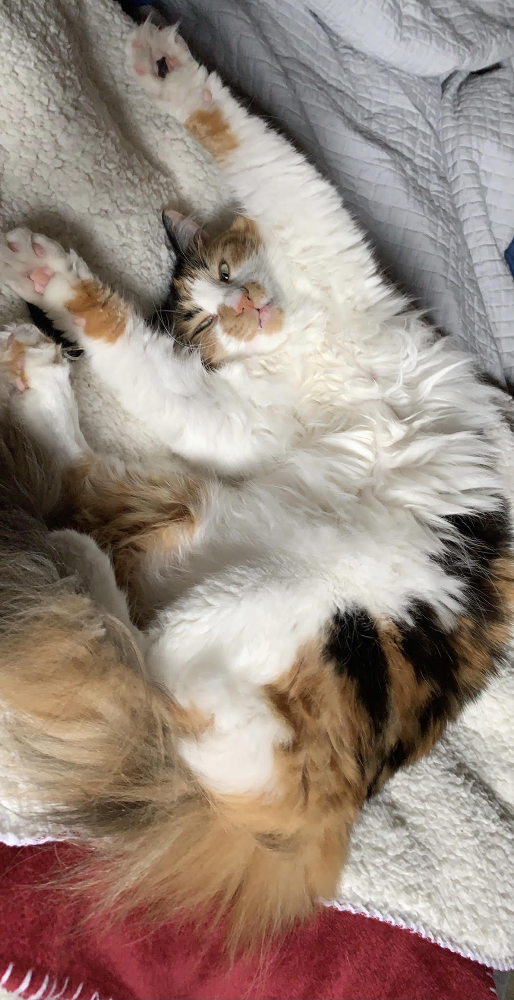
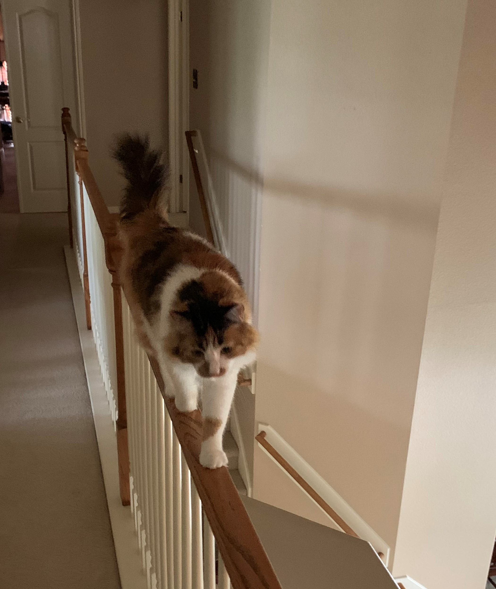
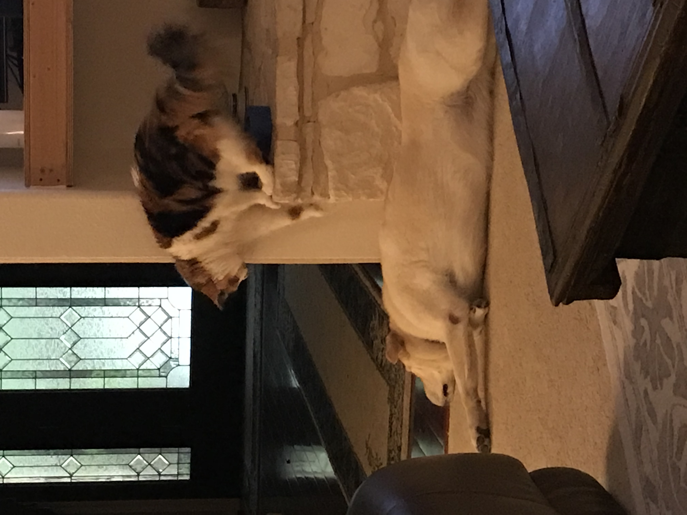

Gravity VS. Feline

Source Research Link
Assumptions
- Cats simultaneously ignore and are slaves to gravitational forces
- Orientation and object permanence play a large role in determining Z location of felines
- Object traction is a key factor in maintaining position
Examples Below

Balance and accuracy are paramount to a successful stunt
Use Case

- Felines us a vertical advantage to stalk and terrify predators much larger than itself
- Aproaching from above maintains the element of surprise
- This plan also gives the attacker the ability to make a fast stealthy escape